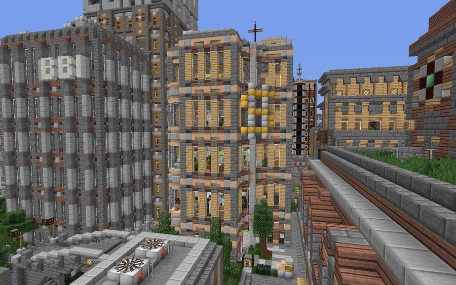
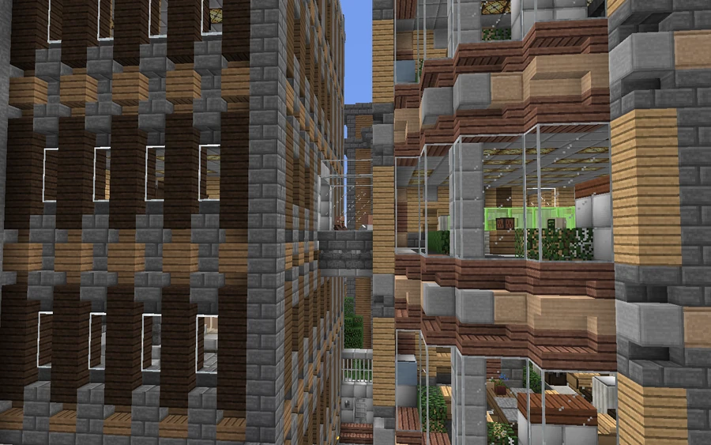

Broville Investment Bankers
-249, 77, 1786
An investment group connected to Broville’s stock exchange, whose history links the city’s rebuilding to the organization of surviving wealth and the enrichment of the elite.
Foundation beside the stock exchange
Broville Investment Bankers presents itself as a place to increase wealth in a “safe, secure, and steady” way, with an offer aimed at the already rich. Its community history places its founding shortly after the latency disaster, during Broville's reconstruction: people who escaped with their fortunes sought to multiply them and secure their position in the elite. This framing belongs to the institution's account and does not independently date the disaster.
Mortimer Shecklestein reportedly saw the creation of the Broville Stock Exchange, abbreviated BroSEX, as an opportunity to expand his fortune. He established the group in the tower beside the exchange building and began investing other people's money. The account also attributes the substantial gains for investors and the founder to illegal means.



Growth and suspicions
Over the years, the group is described as growing in size and influence, apparently always knowing when to buy and sell. That consistency fueled suspicions of market manipulation. The narrative even credits it with anticipating the fall of SOLAR and never having a bad fiscal year.
The accusations reportedly had no visible effect on the institution's expansion, which accompanied the city's growth. The absence of losses and the precision of its investments are claims within this satirical financial portrait, rather than a demonstration of the legality or safety of its services.



The 2013 remodel
The building underwent a complete remodel in 2013 to replace its dated appearance with a more modern office complex. The work included floors, lighting and a new redstone wiring system. An elevated skybridge connected the tower directly to the neighboring BroSEX building.
See also
Sources and references
- v11.4.4 maps, signs, books and items World records
- Broville Investment Bankers · Broville Wiki Community archive
- Build-team coordinate list — bank (warp 881) Map
Text adapted and expanded from Broville Investment Bankers (contributors and history, revision 4956). Adapted text is available under CC BY-SA 3.0.